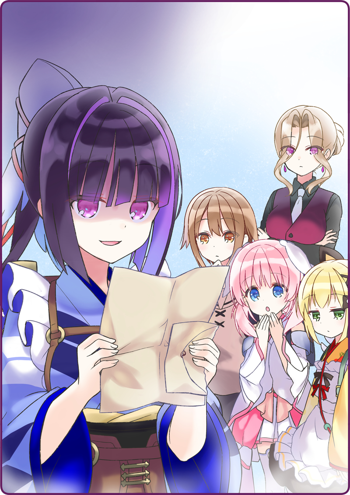

それは閉店後の事だった。
灰桜「……みゅ？」
灰桜が、きょとんとした顔で首を傾げていた。
お客さんの居なくなったフロアに黒猫亭のスタッフが全員集まって、今後の方針などの打ち合わせをしていた。
珍しく奥宮さんも参加している。
机の上に置かれた自律人形たちの数だけのピーナッツバターシェイク。
ボクと奥宮さんの手前には、湯気の立つコーヒー。
みんな、じっと灰桜を見ている。
灰桜「新しいメニューを……わたしが考えるんですか！？」
今度は大きな声で、目を丸くしながら言った。
鴉羽さんは他の人より一際濃厚なピーナッツバターシェイクの入ったカップを手にしながら頷く。
灰桜「で、でも、わたしなんかが黒猫亭の新しいメニューを考えてもいいものでしょうか？」
月下「少しずつではありますが、給仕になれてきた頃合いであります。なので、もう一歩黒猫亭の業務に踏み込むのが良いと考えます」
月下は静かに、特に感情を乗せずにそう言った。
灰桜「みゅみゅみゅ～」
宇佐美「あはは……でも、それを作るのはボクなわけで……お手柔らかいお願いします」
そう。言うは易し、行うは難し。
ボクも調理に慣れてきたとはいえ、まだまだ一人前とは言えない。
難易度の高いメニューだと、箒星さんの手も借りないといけないな。
灰桜「皆さんもこれまで、新メニューを考えてきたんですか？」
月下「オムレツは自分の発案であります」
おとめ「静かな時間を過ごすのも悪くなかったが、軽食があったほうが嬉しいものだ」
灰桜「オーナーはその頃はまだオーナーじゃなかったのですか？」
おとめ「ああ、まだ軍属でね。休憩がてら、よく寄らせて貰っていたよ」
奥宮さんは、かつての黒猫亭を懐かしむように微笑んだ。
おとめ「だが……」
──のも、つかの間。
元がきゅっと引き締まって、声のトーンが下がった。
おとめ「再三言っているにもかかわらず、いまだにメニューに並べてもらえないものがある」
宇佐美「え？ オーナーなのに、拒否されるメニューがあるんですか？ それは一体……」
おとめ「酒だ」
宇佐美「……お酒、ですか？」
灰桜「みゅ？ 黒猫亭には、黒猫ブランという名物があります。ワインも取り扱っていますし……」
おとめ「……おいしいのだが」
おとめ「ふっ、オーナーといっても、所詮は代理。発言権は皆無なのだな……」
奥宮さんは肩を竦めながら、やや卑屈に笑う。
おとめ「まあ、任せるよ。ああ、そうだ」
奥宮さんが何かを思い出したように顔を上げると、自分の懐に手を入れる。
そして、白い封筒を取り出した。
おとめ「鴉羽。お前宛の手紙を預かっている」
鴉羽さんの目が、何かを期待するように大きく見開かれる。
おとめ「いや、残念だが」
望む手紙では無いことがわかり、すぐに肩を落とす。
マスターというのは、それは先代のオーナーのことだろうか。
おとめ「皇都六区とあるな」
六区といえば、皇都最大の歓楽街だ。
そんなところからの手紙……？
おとめ「封は切っていない。自分で確認するといい」
鴉羽さんは、明らかに顔を強張らせながら、奥宮さんの持つ封筒に手を伸ばす。
手にしてもすぐには開けようとせず、じっと封筒を見ている。
月下「ペーパーナイフであります」
気を利かせたのか、空気を読まなかったのか、月下がすっとペーパーナイフを差し出す。
何かを諦めたように一度目を閉じると、受け取ったペーパーナイフで封を切る。
そして、中に入っていた手紙をゆっくりと……どれだけ見たくないんだというくらい、本当にゆっくりと開いた。
手紙と一緒に、なにか大きなカードのような物が挟まっている。
灰桜「……？！」
宇佐美「……？！」
なんとも変な声をあげた。
鴉羽さんの頬は引きつり、真っ青な表情になっていた。

灰桜「……あの、鴉羽さん、お手紙にはなんと書かれていたんですか？」
なんでもない訳がない表情をしている。
鴉羽さんは、自分を落ち着かせるように大きく息を吸う。
そして吐かずに、暫くためて……
自分の中の感情を捨てるかのように、深く深く吐いた。
そのままかくんと肩をおとし、俯く。
生気の無い声。
だけど奥宮さんと月下は、特に気にした様子はない。
二人には、この鴉羽さんの状況が想定内なんだろうか？
灰桜「みゅ……？」
灰桜は、なにやら不安そうだ。
灰桜「は、はい」
その言葉を合図に、奥宮さんと月下は席を立つ。
宇佐美「え？」
灰桜「どうしてですか？」
首を傾げるボクと灰桜。
だけど……
月下「了解であります」
奥宮「売上台帳は、私が代わりに確認しておこう」
二人は鴉羽さんの言葉をすんなりと受け入れた。
どこか空虚な笑みを浮かべる鴉羽さんに、ボクと灰桜はこれ以上声をかけることが出来なかった。

 「ええ、お願いできる？」
「ええ、お願いできる？」